1060G pressure pump electric control
- Path
- Descriptions > 10 ENGINE > 1060 DIESEL FUEL INJECTION > 1060G pressure pump electric control
- Kind
- system description
- Applies to
- engines: 1.3 JTD; all production periods
- Interactive page
- https://sloeber94.github.io/elrnDB-lYpsln/en/#/2427401
Applies to: engines: 1.3 JTD; all production periods
Injection control unit (MJD - 6JF Magneti Marelli common rail)
It is fitted in the engine compartment.
The control unit is the 'flash EPROM' type, i.e. reprogrammable from the outside without intervening on the hardware.
The injection control unit integrates the absolute pressure sensor.
PIN-OUT
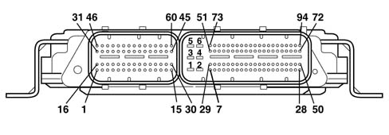
CONNECTOR A 1, Cylinder 4 injector positive 2, Not connected 3, Not connected 4, Fuel pressure regulator positive 5, Positive from main relay 6, Fuel pressure sensor negative 7, Not connected 8, Fuel pressure sensor positive 9, Insufficient engine oil pressure sensor signal 10, Flow meter air temperature signal 11, Not connected 12, Not connected 13, Not connected 14, Flow meter air flow signal 15, E.G.R. solenoid negative 16, Cylinder 1 injector negative 17, Cylinder 2 injector positive 18, Not connected 19, Not connected 20, Not connected 21, Timing sensor negative 22, Not connected 23, Intake air temperature and supercharging pressure sensor positive 24, Intake air temperature and supercharging pressure sensor negative 25, Timing sensor positive 26, Not connected 27, Flow meter negative 28, Not connected 29, Engine coolant temperature sensor earth 30, Not connected 31, Cylinder 3 injector negative 32, Not connected 33, Not connected 34, Fuel pressure regulator negative 35, Not connected 36, Not connected 37, Not connected 38, Fuel pressure sensor signal 39, Not connected 40, Flow meter positive 41, Turbo pressure signal 42, Not connected 43, Engine rpm positive 44, Not connected 45, Not connected 46, Cylinder 4 injector negative 47, Cylinder 1 injector negative 48, Cylinder 3 injector negative 49, Cylinder 2 injector negative 50, Not connected 51, Not connected 52, Not connected 53, Not connected 54, Engine coolant temperature sensor signal 55, Not connected 56, Timing sensor signal 57, Not connected 58, Not connected 59, Rpm sensor negative 60, Not connected CONNECTOR B 1, Control unit power earth 2, Control unit power earth 3, Control unit power earth 4, Control unit 12V supply 5, Control unit 12V supply 6, Control unit 12V supply 7, Fan 1 control (-) 8, Fan 2 control (-) 9, Not connected 10, Air conditioner compressor linear sensor negative 11, Not connected 12, Not connected 13, Fuel temperature sensor earth 14, Not connected 15, Track 1 positive on accelerator pedal potentiometer 16, Not connected 17, Not connected 18, Not connected 19, Not connected 20, Not connected 21, Not connected 22, Not connected 23, Ignition-controlled supply 24, Not connected 25, Not connected 26, Not connected 27, Not connected 28, Request to engage cliimate control from control button 29, Engine rpm signal for robotised gearbox 30, Not connected 31, Not connected 32, Track 2 negative on accelerator potentiometer 33, Not connected 34, Not connected 35, Track 1 negative on accelerator potentiometer 36, Not connected 37, Air conditioner compressor linear sensor positive 38, Not connected 39, Not connected 40, High speed CAN 1 line 41, Accelerator potentiometer track 2 signal 42, Not connected 43, Not connected 44, Not connected 45, Not connected 46, Not connected 47, Not connected 48, Not connected 49, Not connected 50, Direct supply from battery 51, Not connected 52, Not connected 53, Not connected 54, Not connected 55, Not connected 56, Not connected 57, Not connected 58, Not connected 59, Not connected 60, Not connected 61, Fuel temperature sensor signal 62, Not connected 63, Not connected 64, High speed H CAN 1 line 65, Accelerator potentiometer track 1 signal 66, W communication line 67, Not connected 68, Brake pedal switch signal (N.C.) 69, Not connected 70, Plug preheating unit test input 71, Not connected 72, Not connected 73, Not connected 74, Plug preheating relay control 75, Fuel pump relay control 76, Fuel heater relay control 77, Not connected 78, Injection system fault warning light (MIL) 79, Air conditioning compressor control 80, Main relay control 81, Not connected 82, Not connected 83, Accelerator potentiometer track 1 supply 84, Not connected 85, Not connected 86, Not connected 87, Air condioning linear sensor signal 88, Diagnostic line K 89, Not connected 90, Water in diesel filter sensor signal 91, Not connected 92, Normally open brake pedal switch signal 93, Clutch pedal switch
Applies to: engines: 1.3 JTD; all production periods
SPECIFCATIONS
This is fitted on the cylinder block/crankcase, 'facing' the phonic wheel on the engine flywheel.
It is of the inductive type, i.e. it functions by means of the variation in the magnetic field generated by the passage of the teeth of the flywheel (60-2 teeth).
The fuel injection control unit uses the rpm sensor to:
- determine the rotation speed;
- determine the angle of the crankshaft.
Applies to: engines: 1.3 JTD; all production periods
SPECIFCATIONS
The figure shows the rpm sensor components.
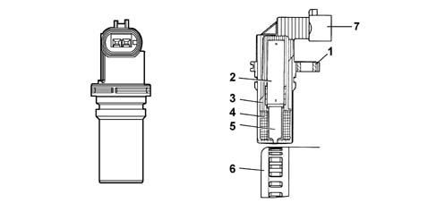
1 - Brass bush 2 - Permanent magnet 3 - Plastic sensor casing 4 - Coil winding 5 - Polar core 6 - Ring gear or flywheel 7 - Coaxial two-wire cable or electrical connection
Applies to: engines: 1.3 JTD; all production periods
SPECIFCATIONS
PIN-OUT
Pin | Name | Signal type |
|---|---|---|
1 | Phonic wheel signal (A) | Frequency output |
2 | Phonic wheel signal (B) | Frequency output |
Applies to: engines: 1.3 JTD; all production periods
TECHNICAL SPECIFICATIONS
Winding resistance 790 Ohm ± 20%
Winding resistance 680 mH ± 20% (f=1kHz)
The distance (gap) for obtaining correct signals, between the end of the sensor and the flywheel, should be between 0.8 and 1.5 mm.
This gap is not adjustable, so if a value outside the tolerance range is measured, check the condition of the sensor and the flywheel.
The graph shows sthe sensor output signal in relation to the horizontal development of the phonic wheel.
1 - Toothed wheel profile 2 - Rpm sensor signal 3 - Reference tooth 4 - TDC recognition point
Applies to: engines: 1.3 JTD; all production periods
OPERATION
The passage from full to empty, due to the presence or absence of the tooth, causes a variation in the magnetic flow which is sufficient to generate an induced alternating voltage, resulting from the count of teeth located on a ring (or phonic wheel).
The frequency and range of the voltage sent to the electronic control unit provides it with the angular speed of the crankshaft.
Applies to: engines: 1.3 JTD; all production periods
SPECIFCATIONS
Hall effect, fitted on the cylinder head and 'facing' the cams.
This pulley comprises a tooth which enables the timing sensor to indicate the engine's timing position.
The fuel injection control unit uses the timing sensor signal to recognise the TDC at the end of compression, and during starting so as to synchronise the engine management control unit with the engine.
The sensor is fitted near the exhaust camshaft.
Applies to: engines: 1.3 JTD; all production periods
OPERATING
A semiconducting layer, through which current passes, immersed in a perpendicular magnetic field (force lines perpendicular to the current direction), generates at its ends a difference in potential known as Hall voltage.
If the intensity of the current remains constant, the voltage generated only depends on the intensity of the magnetic field; the intensity of the field simply has to vary periodically to produce a modulated electrical signal, whose frequency is proportional to the speed with which it changes magnetic field. To obtain this change, a tooth on the inside of the pulley moves close to the sensor.
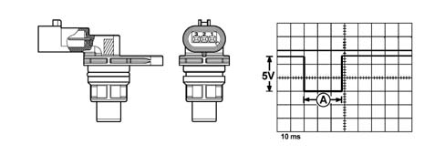
Applies to: engines: 1.3 JTD; all production periods
OPERATING
PIN-OUT
Pin | Name | Signal type |
|---|---|---|
1 | Earth | Earth |
2 | Timing signal | Frequency output |
3 | Fuel system | 12 V input |
In the specific case of the timing sensor, it is supplied by the engine management control unit at 5 V.
Whenever the rotor passes in front of the sensor, a Hall-effect change in output voltage from the sensor is generated; this change takes place throughout the duration of the passage of the rotor in front of the sensor, after which the signal returns to the initial value (5V).
Applies to: engines: 1.3 JTD; all production periods
SPECIFCATIONS
The turbocharging pressure sensor is fitted on the inlet manifold and allows an inlet pressure of up to 1.5 bar to be measured (corresponding to 2.5 bar absolute).
The sensitive element consists of a piezoresistive eleent whose signal is amplified by an electronic circuit integrated in the sensor. The sensor is supplied directly by the electronic control unit with a voltage of 5 V, and as an output supplies a voltage directly proportional to the turbocharging pressure.
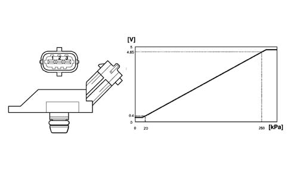
Applies to: engines: 1.3 JTD; all production periods
SPECIFCATIONS
Excess pressure sensor pin out
Pin | Name | Signal type |
|---|---|---|
1 | Fuel system | 5 V supply |
2 | Earth | Earth |
3 | Sensor output | Analogue output |
Applies to: engines: 1.3 JTD; all production periods
SPECIFCATIONS
It is fitted on the thermostatic cup and measures the temperature of the coolant by means of an NTC which has a negative resistance coefficient.
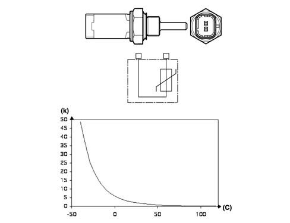
Applies to: engines: 1.3 JTD; all production periods
SPECIFCATIONS
Engine coolant temperature sensor specifications
Temperature (C°) | Resistance (kOhm) |
|---|---|
- 40 | 48.80 |
- 30 | 27.41 |
-20 | 15.97 |
- 10 | 9.62 |
0 | 5.97 |
10 | 3.81 |
20 | 2.5 |
30 | 1.68 |
40 | 1.15 |
50 | 0.81 |
60 | 0.58 |
70 | 0.42 |
80 | 0.31 |
90 | 0.23 |
100 | 0.18 |
110 | 0.14 |
120 | 0.11 |
130 | 0.08 |
Applies to: engines: 1.3 JTD; all production periods
SPECIFCATIONS
The flow meter is located on the air inlet duct and is of the 'hot film' type.
An arrow on the flow meter outer casing indicates the direction of the air flow.
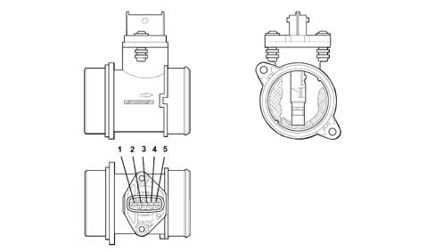
Applies to: engines: 1.3 JTD; all production periods
SPECIFCATIONS
Air flow meter pin out
Pin | Name | Signal type |
|---|---|---|
1 | Fuel temperature | Analogue output |
2 | Fuel system | 12 V supply |
3 | Earth | Earth |
4 | Reference voltage | 5 V |
5 | Sensor output | Analogue output |
Applies to: engines: 1.3 JTD; all production periods
OPERATION
The operating principle is based on a diaphragm located in a measuring duct through which the intake air entering the engine flows.
The hot film diaphragm is kept at a constant temperature (about 120°C above the incoming air temperature) by the heating resistor.
The air mass passing through the measuring duct tends to draw heat from the diaphragm, so to keep the latter at a constant temperature, some current must flow through the resistor.
The figure shows the general diagram of the flow meter's sensitive element.
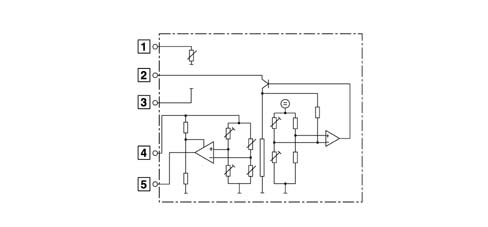
Applies to: engines: 1.3 JTD; all production periods
OPERATION
The platinum hot-film sensor is a PTC (positive temperature coefficient) thermal resistor, i.e. a resistor whose value increases as the temperature increases.
As the quantity of air taken in increases, the amount of heat drawn from the sensor increases, so there is a reduction in the sensor's resistance. As this is inserted in a 'bridge' measurement circuit, it causes an increase in the output voltage, measured by the ECU to calculate the volume of air drawn in by the engine.
The flow meter is also able to distinguish the direction of the air flow, so the information relates to the actual quantity of air drawn in by the engine, unaffected by any turbulence.
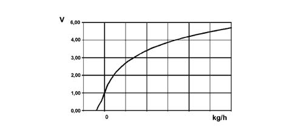
Applies to: engines: 1.3 JTD; all production periods
OPERATION
Air flow meter specifications
The air temperature sensor is built into the flow meter. This sensor is of the NTC type: the nominal resistance is 2000 Ohm at a temperature of 25 °C.
Temperature (C°) | Resistance (kOhm) |
|---|---|
- 40 | 39.26 |
- 30 | 22.96 |
-20 | 13.85 |
- 10 | 8.609 |
0 | 5.499 |
10 | 3.604 |
20 | 2.42 |
30 | 1.662 |
40 | 1.166 |
50 | 0.835 |
60 | 0.609 |
70 | 0.452 |
80 | 0.34 |
90 | 0.261 |
100 | 0.202 |
110 | 0.159 |
120 | 0.127 |
130 | 0.102 |
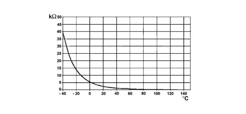
Applies to: engines: 1.3 JTD; all production periods
OPERATION
.
Applies to: engines: 1.3 JTD; all production periods
Specifications
It is built into the fuel heater and measures the temperature of the coolant by means of an NTC thermistor which has a negative resistance coefficient.
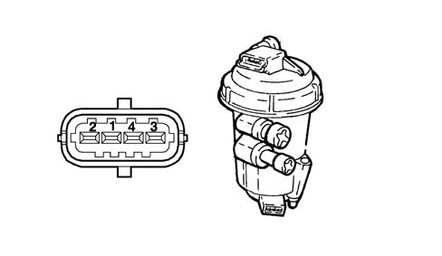
Applies to: engines: 1.3 JTD; all production periods
Specifications
Fuel temperature sensor pin out
Pin | Name | Signal type |
|---|---|---|
1 | Sensor earth | Earth |
2 | Temperature signal | Analogue output |
Fuel temperature sensor specifications
Temperature (C°) | Resistance (kOhm) |
|---|---|
- 40 | 48.80 |
- 30 | 27.41 |
-20 | 15.97 |
- 10 | 9.62 |
0 | 5.97 |
10 | 3.81 |
20 | 2.5 |
30 | 1.68 |
40 | 1.15 |
50 | 0.81 |
60 | 0.58 |
70 | 0.42 |
80 | 0.31 |
90 | 0.23 |
100 | 0.18 |
110 | 0.14 |
120 | 0.11 |
130 | 0.08 |
The sensor is based on semiconductor technology; so if the sensor temperature increases as the fuel temperature increases, the resistance decreases.
As the variation in resistance is not linear, for the same temperature increment, it is higher for low temperatures than for high temperatures.
Applies to: engines: 1.3 JTD; all production periods
SPECIFCATIONS
It is fitted at the end of the 'rail' fuel distribution manifold and has the task of supplying the injection control unit with a 'feedback' signal to:
- regulate the injection pressure
- regulating injection duration.
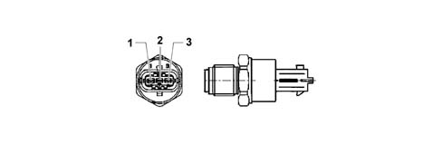
Applies to: engines: 1.3 JTD; all production periods
SPECIFCATIONS
The sensor is supplied directly by the engine management control unit with a voltage of 5 V. The output voltage varies linearly between 0.5 V (0 bar) and 4.5 V (1500 bar).
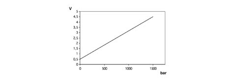
Applies to: engines: 1.3 JTD; all production periods
SPECIFCATIONS
Fuel pressure sensor pin out
Pin | Name | Signal type |
|---|---|---|
1 | Earth | Earth |
2 | Sensor output | Analogue output |
3 | Fuel system | 5 V supply |
Applies to: engines: 1.3 JTD; all production periods
CONSTRUCTION FEATURES
The sensor consists of a casing, secured to the accelerator pedal mount, which contains a shaft, in an axial position, connected to two potentiometers: one main one and one safety one.
There is a coil spring on the shaft which guarantees the correct resistance to the pressure whilst a second spring ensures the return on release.
The redundant reading of the signal makes it possible to continuously monitor the plausibility of the values measured, so as to ensure completely safe driving, even in the event of a fault.
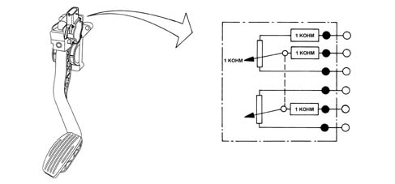
Applies to: engines: 1.3 JTD; all production periods
OPERATION
The position of the accelerator pedal is transformed into an electrical voltage signal and is sent to the fuel injection control unit by the potentiometer connected to the accelerator pedal.
The accelerator pedal position signal is processed together with the information relating to the rpm, to obtain the fuel injection times and relevant pressure.
Pin | Name | Signal type |
|---|---|---|
relay | Track 2 supply | 5 V input |
2 | Track 1 supply | 5 V input |
3 | Track 1 earth | Earth |
4 | Track 1 signal | Analogue output |
5 | Track 2 earth | Earth |
6 | Track 2 signal | Analogue output |
Applies to: engines: 1.3 JTD; all production periods
BOSCH SENSOR TECHNICAL SPECIFICATIONS
Supply voltage: 5V ± 0.3V
Resistance at potentiometer slide terminals: : 1 kOhm ± 0.4 kOhm
Track 1 resistance: 1.2 kOhm ± 0.4 kOhm
Track 2 resistance: 1.7 kOhm ± 0.8 kOhm
Applies to: engines: 1.3 JTD; all production periods
HELLA SENSOR TECHNICAL SPECIFICATIONS
Supply voltage: 5V ± 0.3V
Resistance at potentiometer slide terminals: : 1 kOhm ± 0.4 kOhm
Track 1 resistance: 0.9 kOhm ± 35% ....1.4 kOhm ± 35%
Track 2 resistance: 1.2 kOhm ± 35% ....2.0 kOhm ± 35%
Applies to: engines: 1.3 JTD; all production periods
CONSTRUCTION FEATURES
The fuel pressure regulator is fitted on the rail and regulates the fuel pressure in accordance with commands from the engine management control unit, via a ball valve which discharges the fuel ont he low-pressure line to the fuel tank.
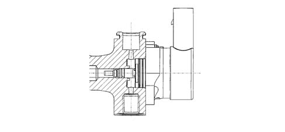
Applies to: engines: 1.3 JTD; all production periods
CONSTRUCTION FEATURES
The fuel pressure regulator contains a solenoid which is controlled by the engine management control unit by the PWM method (carrier 1 kHz). When the duty cycle is set to 0%, the solenoid is not supplied: there is minimum pressure in the rail because of the preload of the ball valve spring.
Applies to: engines: 1.3 JTD; all production periods
ELECTRICAL SPECIFICATIONS
Resistance: 2.07 - 2.53 (ohm) at 20 °C
Maximum current 2.5 A
Minimum pressure not supplied 50 bar
Applies to: engines: 1.3 JTD; all production periods
CONSTRUCTION FEATURES
The electric fuel pump supplies the high-pressure pump. It is fully immersed in the fuel in the fuel tank. The pump assembly is designed so as to obtain the maximum fuel level in the suction area.
This function is achieved by a Venturi located on the return pipe to the suction area, rather than to the fuel tank. The pumping unit is of the roller type and permits a capacity of 160 litres/hour.
The pump comprises a permanent-magnet electric motor which is continuously supplied when the engine is on. The fuel sent to the high-pressure pump which has not been used flows back into the tank through a pressure-relief valve mounted on the filter unit.
The pump has a further pressure-relief valve, so as to avoid damage to the pumping unit if the delivery pipe becomes blocked.
Applies to: engines: 1.3 JTD; all production periods
TECHNICAL SPECIFICATIONS
Absorbed current < = 4.6 A (supply voltage 13 V)
Capacity > = 150 l/h
Working pressure 200 - 400 kPa
Applies to: engines: 1.3 JTD; all production periods
CONSTRUCTION FEATURES
The device interfaces with and is controlled by the engine management system in accordance with the EOBD protocol. It has been designed to carry out all the operating and monitoring functions for the operation of the individual heater plugs during the pre-heating stage for diesel engines.
The control unit comprises a protection against high currents and high voltrages, and has a control logic which, in the event of a fault, acts as an auto-reset electronic fuse.
Because of its thermal characteristics and resistance to external agents, the device can be fitted directly in the engine compartment.
The control unit is protected on all terminals against the possible reversed connection of battery terminals, and is built in such a way as to withstand all stresses occurring in the vehicle.
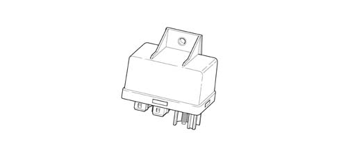
Applies to: engines: 1.3 JTD; all production periods
CONSTRUCTION FEATURES
The unit has the following connecting termnals:
Terminal | Name |
|---|---|
30 | Direct connection to battery positive (+Vbat) for supplying the plugs |
G1, G2, G3, G4 | Output for plug connections |
86 | Supply from engine management control unit |
31 | Earth connectioni (GND) |
ST | Input for start to control coming from engine management control unit |
K | Input for start to control coming from engine management control unit |
DI | Output for diagnosis to engine management control unit |
Applies to: engines: 1.3 JTD; all production periods
CONSTRUCTION FEATURES
The rail consists of a forged steel tube designed to withstand the high operating pressures in the high-pressure system.
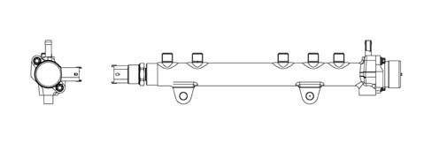
Applies to: engines: 1.3 JTD; all production periods
CONSTRUCTION FEATURES
The internal volume in the rail is cm3: this volume has been determined so as to minimise pressure peaks due to the injection process, without slowing down the commands to change the fuel pressure set by the engine management control unit, in order to optimise combustion.
The fuel from the high-pressure pump reaches the rail and is then taken to the injectors. A pressure sensor and the high-pressure regulator are mounted on the rail.
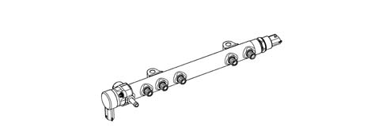
Applies to: engines: 1.3 JTD; all production periods
CONSTRUCTION FEATURES
The high-pressure pump is of the CP1 Compact type with three radial pistons The capacity is 567 mm3/revolution and the rotation speed, being mounted on the camshaft, is equal to half the speed of rotation of the crankshaft (reduction ratio 2:1). The pump is lubricated and cooled by the flow of fuel passing through it: the necessary flow rate is provided by the low-pressure pump. This supplies the pump with a quantity of fuel which always exceeds the engine's requirement, so as to create a recirculation of fuel towards the tank, and so the pump is lubricated (as a priority) and cooled.
The movement of the pistons is deterined by a cam joined to the pump shaft: this drives a polygonal ring which acts on the piston small end.
Each pumping unit has an inlet plate valve and a delivery supply valve.
The pump comprises a shutoff valve: this protects the pump in the event of a low flow rate from the low-pressure supply, thus ensuring lubrication to the pumping units and cam mechanism.
Applies to: engines: 1.3 JTD; all production periods
TECHNICAL SPECIFICATIONS
Radial pump with 3 pumping units
Capacity 567 [mm3/revolution]
Efficiency: > 79% at 1350 bar at 1000 rpm
Nominal pressure: 1350 bar
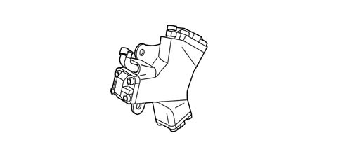
Applies to: engines: 1.3 JTD; all production periods
CONSTRUCTION FEATURES
The diesel heater is built into the diesel filter cover and comprises three resistors which are supplied by the control unit in accordance with the signal from the fuel temperature sensor.
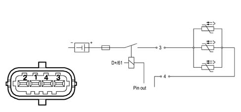
Applies to: engines: 1.3 JTD; all production periods
CONSTRUCTION FEATURES
DIESEL FILTER CONNECTOR PIN-OU
Pin | Name | Signal type |
|---|---|---|
3 | Fuel system | 12V |
4 | Earth | Earth |
Applies to: engines: 1.3 JTD; all production periods
CONSTRUCTION FEATURES
Inserted in the diesel filter container casing, at the bottom, it indicates the presence of water via the warning light on the instrument panel.
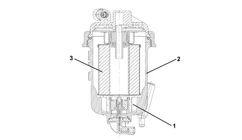
1 - Water presence sensor 2 - Diesel filter casing 3 - Filter element